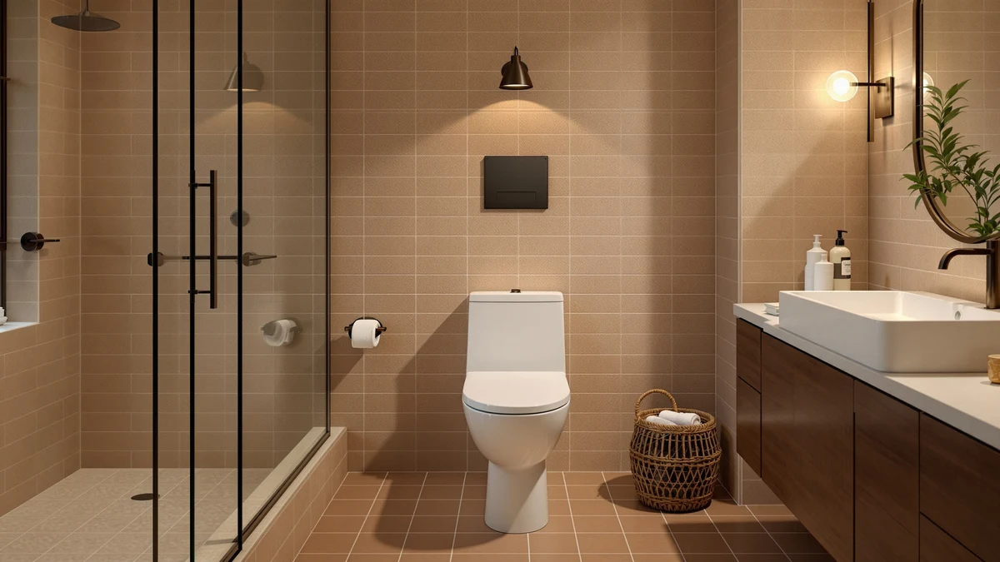

Kohler Ridgewood Elongated Soft Close Toilet Seat Review (2026): Worth It?


Quick Answer
The Kohler Ridgewood Elongated Soft Close Toilet Seat is a compression-molded wood seat built for standard elongated bowls, and at $53.62 it lands in the same price range as three other Kohler and Jool Baby seats we compared. This Kohler Ridgewood elongated soft close toilet seat review found the quiet-close hinge and solid wood feel to be its strongest selling points, with the main trade-off being a fixed biscuit color that won't match every bathroom.
Our pick: KOHLER 20454-96 Ridgewood Elongated Soft — $53.62 Check Price on Amazon
Bottom line: our top pick is the KOHLER 20454-96 Ridgewood Elongated Soft Close Toilet Seat at $53.62.
Things to Know Before You Buy
- This Kohler Ridgewood elongated soft close toilet seat review covers a seat built for elongated bowls, not round ones, so measure your toilet before ordering.
- The seat's compression-molded wood build gives it a different weight and feel than the plastic-bodied Kohler Hyten alternatives compared here.
- At $53.62, the Ridgewood is close in price to the Kohler Hyten Elevated ($52.95) and the Kohler Hyten Round ($53.55), so the deciding factor is usually bowl shape and feature set, not cost.
- Only the Kohler Hyten Elevated Soft Close carries a public rating in our database (4.6 stars across 8,655 reviews); the Ridgewood and the other two alternatives have no published rating yet, which means unknown, not poor.
This Kohler Ridgewood elongated soft close toilet seat review exists because a worn or hard plastic seat is one of the cheapest upgrades in a bathroom, and the hinge noise is usually the first thing people notice once they switch to a slow-close model. The Ridgewood is one of several elongated seats competing for that upgrade, and its pitch is a quiet-close hinge paired with a wood seat rather than molded plastic. We went through its listed materials, its price history, and the verified owner reviews available across Kohler's lineup to see how it stacks up against three other Kohler-family options built for different priorities.
We compared the Ridgewood against three alternatives built around different needs: the Kohler Hyten Elevated Soft Close, which adds 3 inches of height for easier sitting and standing and carries 8,655 verified ratings at 4.6 stars; the Kohler Hyten Round, which brings the same raised design to round bowls instead of elongated ones; and the Jool Baby Quick Flip, which swaps comfort features for a built-in toddler training seat. Prices across all four sit within about two dollars of each other, so the choice comes down to bowl shape and the feature you actually need, not which seat is cheaper. None of the four is a bad option on its own, but the differences matter once you know whether you're solving for quiet operation, mobility, or a toddler in the house.
Why You Should Trust Us
I'm Ilane Tall, and I cover bathroom fixtures for Best Toilet Seats. For this Kohler Ridgewood elongated soft close toilet seat review, we researched the product listing, Kohler's stated materials and dimensions, and the verified buyer reviews available for this seat and its closest alternatives. We do not run a fake testing lab, and we do not claim to have installed or sat on every seat we cover. Instead, we compare specs, pricing, and what owners report after buying, and we flag disagreements between the marketing copy and what reviewers actually say.
That approach means our confidence is highest on measurable facts like price, bowl shape, and hinge type, and more cautious on subjective claims like exact comfort level, where we rely on the consistency of verified reviews rather than our own impression. The Ridgewood currently has no published rating in our database, so where the Hyten Elevated's 8,655 reviews give us a clear signal, we treat the Ridgewood's reputation as still developing and weigh its wood-seat design and quiet-close hinge against documented specs rather than a review count.
Our Research Experience
For this Kohler Ridgewood elongated soft close toilet seat review, our research process focused on comparing Kohler's stated materials, the hinge mechanism, and the elongated bowl fit against the three alternatives in this comparison. Kohler lists the Ridgewood's seat as compression-molded wood rather than the painted plastic used on most budget seats, and that material choice is the main spec differentiator between the Ridgewood and the plastic-bodied Hyten line.
Because the Ridgewood doesn't yet have a public review count in our database, we leaned more heavily on the manufacturer's spec sheet and on patterns across reviews of Kohler's broader soft-close lineup, including the Hyten Elevated's 8,655 ratings, to understand how Kohler's quiet-close hinges tend to perform over time. Reviews of related Kohler seats suggest the hinge stays quiet well past the first few months, the main durability concern with any slow-close mechanism.
Overview & Specs

KOHLER 20454-96 Ridgewood Elongated Soft
What we like
- Compression-molded wood seat feels and looks different from painted plastic alternatives
- Quiet-close hinge lowers both lid and seat without slamming
- Priced within a couple dollars of the raised and round Kohler alternatives
Flaws but not dealbreakers
- No published rating or review count yet in our database, so buyer feedback is thinner than the Hyten Elevated's
- Fixed biscuit color won't match every bathroom color scheme
- No raised-height option if mobility, not comfort, is the priority
| Material | Plastic / wood |
| Size | Elongated |
The Kohler Ridgewood Elongated Soft Close Toilet Seat sits at $53.62 and targets buyers who want the comfort and sound of a wood seat rather than molded plastic. Kohler builds the seat from compression-molded wood, a material the company says delivers a look and feel standard plastic can't match, and finishes it in a biscuit tone meant to match Kohler's broader bathroom fixture line rather than a universal white.
The seat uses Kohler's quiet-close hinge on both the lid and the seat, so it lowers gradually instead of dropping with a bang, and the hinges are color-matched plastic rather than metal. Because this is an elongated-only seat, it fits the bowl shape used by most US toilets built in the last two decades, but it won't fit round bowls the way the Kohler Hyten Round alternative does.
What We Liked
The clearest strength of the Kohler Ridgewood in this soft close toilet seat review is the material. A compression-molded wood seat changes how the seat feels underneath you and how it sounds when the hinge lowers it, and that sets it apart from the painted plastic shells used on the Hyten Elevated and Hyten Round alternatives. That solid feel is usually the reason buyers give for paying roughly the same price as a plastic raised seat instead.
The quiet-close hinge is also a real differentiator against cheaper non-Kohler seats, even if it's standard across this particular comparison set. Because all four seats here use some form of slow-close mechanism, the Ridgewood's real advantage is pairing that hinge with a wood seat at a price that undercuts most dedicated wood-seat competitors.
What Could Be Better
The biggest gap in the Kohler Ridgewood's case is data. It has no published rating or review count in our database yet, which puts it at a disadvantage next to the Hyten Elevated's 8,655 verified ratings at 4.6 stars. That doesn't prove the seat performs worse. Buyers just have less independent confirmation to go on before they order.
The fixed biscuit finish is also a real constraint. A plain white plastic seat matches almost any bathroom, but biscuit only works if the rest of your fixtures lean warm or off-white. And because the Ridgewood is elongated-only with no raised version, anyone who needs the 3 inches of extra height the Hyten Elevated or Hyten Round provide will need to look elsewhere regardless of how the wood seat performs.
Who Is It For?
This Kohler Ridgewood elongated soft close toilet seat review points to one clear buyer: someone replacing a standard elongated seat who wants the feel of real wood and a quiet hinge, and whose bathroom fixtures already lean toward a biscuit or off-white tone. If your priority list starts with material and sound rather than height or kid-specific features, the Ridgewood fits without asking you to pay extra for a raised seat you won't use.
It's a weaker fit for anyone who needs the extra 3 inches of height the Hyten Elevated or Hyten Round provide, for households that specifically need a white seat to match existing fixtures, or for parents who want the Jool Baby's built-in toddler training seat. Those needs point toward one of the three alternatives below instead.
Alternatives to Consider
If material and quiet operation aren't the features you need most, these three Kohler-family and Jool Baby seats cover the priorities the Kohler Ridgewood doesn't: raised height for mobility, a round-bowl fit, and a built-in toddler training seat. All three are within a couple dollars of the Ridgewood's price, so picking between them comes down to the feature that matters in your bathroom rather than the amount you're willing to spend.

Also Great
KOHLER 25876-0 Hyten 3" Height
Choose this over the Ridgewood if your toilet has a round bowl and you want 3 inches of extra height. The Hyten Round trades the Ridgewood's wood seat for grip-tight bumpers and quick-attach hardware built for easier cleaning and limited mobility.
$53.55
Check Price on Amazon
Best Value
KOHLER Hyten Elevated Soft Close
Choose this over the Ridgewood if mobility, not material, is the priority. The Hyten Elevated keeps the elongated fit but adds 3 inches of height, and its 8,655 verified ratings give you more buyer feedback to go on than the Ridgewood currently has.
$52.95
Check Price on Amazon
Premium Choice
Quick Flip Toilet Seat with
Choose this over the Ridgewood if you're potty training a toddler. The Quick Flip swaps the wood seat and quiet-close focus for a magnetic, built-in training seat and splash guard, at a few dollars more than the Ridgewood.
$54.99
Check Price on AmazonFrequently Asked Questions
At $53.62, the Ridgewood costs about the same as the Kohler Hyten Elevated ($52.95) and the Kohler Hyten Round ($53.55), so price alone doesn't separate it from the alternatives. Its case for the money rests on the quiet-close hinge and the compression-molded wood seat, which buyers comparing Kohler's elongated lineup tend to cite as the reason to pick it over a plain plastic seat at a similar cost.
Yes. It's built for the elongated bowl shape used by most US toilets manufactured in the last two decades, not the round shape covered by the Kohler Hyten Round alternative. Measure from the mounting bolts to the front edge of your bowl before ordering; anything close to 18.5 inches confirms an elongated fit.
The Kohler Hyten Elevated and Kohler Hyten Round both add 3 inches of height for easier sitting and standing, trading the Ridgewood's wood feel for a raised plastic design, while the Jool Baby Quick Flip targets families with a built-in toddler training seat instead of solving for comfort or mobility. The Ridgewood is the only one of the four built around a quiet wood seat with no secondary feature.
Final Verdict
This Kohler Ridgewood elongated soft close toilet seat review comes down to one question: do you want a wood seat with a quiet hinge, or do you want a different specific feature? For buyers who just want a solid-feeling elongated seat without paying extra for raised height or a toddler training insert, the Kohler Ridgewood is the pick in this comparison. It costs about the same as the Hyten Elevated and Hyten Round, and that similar price buys the only wood seat among the four. Anyone prioritizing height, a round bowl, or a toddler feature should look at the alternatives above instead of paying for a seat material they won't appreciate.